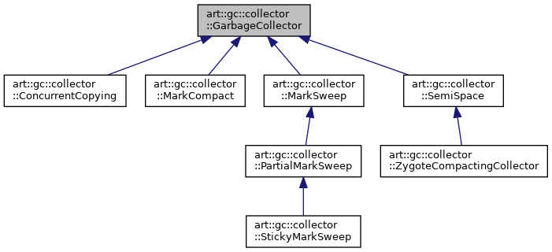
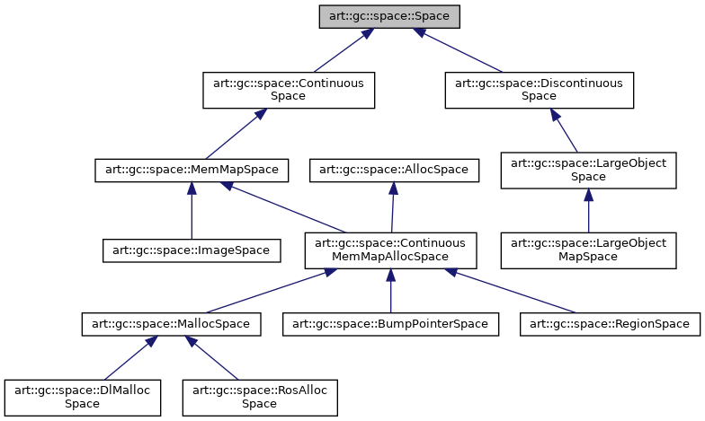

GC
Table of Contents
1. GC
1.1. Overview
1.2. Collector
1.2.1. Hierachy
digraph "art::gc::collector::GarbageCollector"
{
edge [fontname="Helvetica",fontsize="10",labelfontname="Helvetica",labelfontsize="10"];
node [fontname="Helvetica",fontsize="10",shape=record];
Node0 [label="art::gc::collector\l::GarbageCollector",height=0.2,width=0.4,color="black", fillcolor="grey75", style="filled", fontcolor="black"];
Node0 -> Node4 [dir="back",color="midnightblue",fontsize="10",style="solid",fontname="Helvetica"];
Node4 [label="art::gc::collector\l::ConcurrentCopying",height=0.2,width=0.4,color="black", fillcolor="white", style="filled"];
Node0 -> Node5 [dir="back",color="midnightblue",fontsize="10",style="solid",fontname="Helvetica"];
Node5 [label="art::gc::collector\l::MarkCompact",height=0.2,width=0.4,color="black", fillcolor="white", style="filled"];
Node0 -> Node6 [dir="back",color="midnightblue",fontsize="10",style="solid",fontname="Helvetica"];
Node6 [label="art::gc::collector\l::MarkSweep",height=0.2,width=0.4,color="black", fillcolor="white", style="filled"];
Node6 -> Node7 [dir="back",color="midnightblue",fontsize="10",style="solid",fontname="Helvetica"];
Node7 [label="art::gc::collector\l::PartialMarkSweep",height=0.2,width=0.4,color="black", fillcolor="white", style="filled"];
Node7 -> Node8 [dir="back",color="midnightblue",fontsize="10",style="solid",fontname="Helvetica"];
Node8 [label="art::gc::collector\l::StickyMarkSweep",height=0.2,width=0.4,color="black", fillcolor="white", style="filled"];
Node0 -> Node9 [dir="back",color="midnightblue",fontsize="10",style="solid",fontname="Helvetica"];
Node9 [label="art::gc::collector\l::SemiSpace",height=0.2,width=0.4,color="black", fillcolor="white", style="filled"];
Node9 -> Node10 [dir="back",color="midnightblue",fontsize="10",style="solid",fontname="Helvetica"];
Node10 [label="art::gc::collector\l::ZygoteCompactingCollector",height=0.2,width=0.4,color="black", fillcolor="white", style="filled"];
}

1.2.2. Collector Type
- kCollectorTypeMS, kCollectorTypeCMS MarkSweep
- kCollectorTypeSS, kCollectorTypeGSS SemiSpace
- kCollectorTypeMC MarkCompact
- kCollectorTypeCC ConcurrentCopying
- kCollectorTypeHomogeneousSpaceCompact
1.2.3. Gc Type
- kGcTypeSticky StickyMarkSweep 属于 sticky gc
- kGcTypePartial PartialMarkSweep, SemiSpace, MarkCompact, ConcurrentCopying 都属于 partial gc
- kGcTypeFull MarkSweep 属于 full gc
1.2.4. GcRoot
1.2.4.1. RootType
enum RootType { kRootUnknown = 0, kRootJNIGlobal, kRootJNILocal, kRootJavaFrame, kRootNativeStack, kRootStickyClass, kRootThreadBlock, kRootMonitorUsed, kRootThreadObject, kRootInternedString, kRootFinalizing, // used for HPROF's conversion to HprofHeapTag kRootDebugger, kRootReferenceCleanup, // used for HPROF's conversion to HprofHeapTag kRootVMInternal, kRootJNIMonitor, };
1.2.4.2. non-concurrent gc root
- local IndirectReferenceTable
- StackHandleScope
- monitor_enter_object
- stack frame(shadow/quick)
1.2.4.3. concurrent gc root
- global IndirectReferenceTable
- intern_table_
- class_linker_
- class_roots_
- dex_caches_
1.2.4.4. MarkRoots
MarkRoots: Runtime::VisitRoots(visitor) VisitNonConcurrentRoots(visitor); VisitConcurrentRoots(visitor, flags); VisitNonConcurrentRoots: thread_list_->VisitRoots(visitor); thread->VisitRoots(visitor); // monitor_enter_object visitor->VisitRootIfNonNull(&tlsPtr_.monitor_enter_object, RootInfo(kRootNativeStack, thread_id)); // local indirect_reference_table tlsPtr_.jni_env->locals.VisitRoots(visitor, RootInfo(kRootJNILocal, thread_id)); // jni monitor tlsPtr_.jni_env->monitors.VisitRoots(visitor, RootInfo(kRootJNIMonitor, thread_id)); // StackHandleScope HandleScopeVisitRoots(visitor, thread_id); // frame: shadow and quick RootCallbackVisitor visitor_to_callback(visitor, thread_id); ReferenceMapVisitor<RootCallbackVisitor> mapper(this, context, visitor_to_callback); mapper.WalkStack(); VisitNonThreadRoots(visitor); VisitConcurrentRoots: // intern_table_ intern_table_->VisitRoots(visitor, flags); class_linker_->VisitRoots(visitor, flags); class_roots_.VisitRootIfNonNull(visitor, RootInfo(kRootVMInternal)); heap_->VisitAllocationRecords(visitor); visitor: // 不同的 collector 有不同的 visitor, 以 MS 为例, visitor.VisitRoots 就是把对象放在 MarkStack 中
1.2.5. Collector.Run
GarbageCollector::Run():
collector.RunPhases()
// 各种 collector 的 RunPhases 有些差别, 以 CMS 为例
MarkSweep::RunPhases():
InitializePhase()
if (IsConcurrent()):
// for CMS, MarkingPhase is concurrent
MarkingPhase();
{
ScopedPause pause (this);
PausePhase ()
}
// ReclaimPhase is concurrent
ReclaimPhase()
else:
{
ScopedPause pause(this);
// for MS, MarkingPhase is not concurrent
MarkingPhase();
PausePhase()
}
// ReclaimPhase is concurrent even for MS
ReclaimPhase()
1.2.5.1. MarkingPhase
MarkingPhase:
// 所谓 BindBitmaps, 实际指的是 bind mark bitmaps, 即在扫描之前就
// 把一些满足条件的对象在 mark bitmaps 中置位, 例如:
// 1. 若一个 space 属于 kGcRetentionPolicyNeverCollect, 则该 space
// 中的所有 live bitmaps 中的对象都被放到 mark bitmaps 中
// 2. 若当前的 collector 为 partial_mark_sweep, 则 zygote space 的
// live bitmaps 会被复制到 mark bitmaps, 表示 zygote space 在
// partial_mark_sweep 时不会被回收
// 3. 若当前为 sticky_mark_sweep, 则 DlMallocSpace 中的 live bitmaps
// 也会被复制到 mark bitmaps, 这个看起来有些奇怪: live bitmaps 中不
// 一定都是被 mark 的对象啊...
// 与 dalvik 不同的是, 新分配的对象不保存在 live bitmaps, 而是先保存
// 在 allocation stack 中, 所以 live bitmaps 代表的实际上是上一次 GC
// 结束时的 mark bitmaps. sticky_mark_sweep 为了加快 mark 与 sweep
// 的过程, 假设上一次 GC 结束时的 mark bitmaps 在这一次 GC 时还是有
// 效的, 即上一次 GC 时的对象都不会被释放: sticky_mark_sweep 只会扫
// 描那些新增的对象
// 为了优化 GC, collector 可以做一些假设, 但它只可以假设某对象被
// mark, 而不能假设某对象没有被 mark.
BindBitmaps();
FindDefaultMarkBitmap();
// Process dirty cards and add dirty cards to mod union tables.
heap_->ProcessCards(timings_);
MarkRoots(self);
MarkReachableObjects();
UpdateAndMarkModUnion();
RecursiveMark();
1.2.5.2. PausePhase
PausePhase: if (IsConcurrent()): // CMS 需在在 PausePhase 使用 CardTable 进行重标记 ReMarkRoots(); // Scan dirty objects, this is only required if we are not doing concurrent GC. RecursiveMarkDirtyObjects(true, accounting::CardTable::kCardDirty); // SwapStacks 是将 allocation_stack_ 与 live_stack_ 交换, 从此以后, // 新分配的对象会被 push 到新的 allocation_stack_ 中, 而之前 // allocation_stack_ 的内容现在位于 live_stack_ 中. // 后续 sticky_mark_sweep 会使用 live_stack_ 来查找最近新分配的对象 heap_->SwapStacks();
1.2.5.3. ReclaimPhase
ReclaimPhase: ProcessReferences(self); Sweep(false); SwapBitmaps(); UnBindBitmaps();
1.3. Heap
1.3.1. gc related
- collector_type_ heap 当前使用的 collector_type_, 进行 CollectGarbageInternal 时需要根据 collector_type_ 和 CollectGarbageInternal 的 gc_type 参数选择一个 collector
- background_collector_type_, foreground_collector_type_ TransitionCollector 时根据当前为 backgroup 或 foreground 把 collector_type_ 设置为 background_collector_type_ 或 foreground_collector_type_
gc_plan_ gc_plan_ 是一个数组, 包含多个当前 collector 支持的 gc_type, 例如, 若 collector_type_ 为 MS, 则 gc_plan_ 为:
[kGcTypeSticky, kGcTypePartial, kGcTypeFull]
当 AllocateInternalWithGc 时, 会依次尝试使用 gc_plan_ 中指定的 gc_type 进行 CollectGarbageInternal, 以期望能尽量的进行轻量级的 gc
另外, gc 成功时会记下本次使用的 gc_type 为 next_gc_type_, 当进行 ConcurrentGC 时, 它只会尝试 next_gc_type_ 及其之后的 gc_type
1.3.2. CollectGarbageInternal
CollectGarbageInternal 是进行 GC 的入口, 无论 ConcurrentGC 线程, 还是 AllocObject 导致的 GC, 或者强制进行的 GC, 最终都调用该接口.
// gc_type 代表要进行何种 gc: sticky, partial, full
// gc_cause 表示 gc 的原因: alloc, background(concurrent), explicit
// clear_soft_references: 是否清除 soft reference
// 由于 ART 一般使用 concurrent_gc_, 所以实际上这个函数的某些参数组合
// 是不存在的, 例如:
// 1. 若 gc_cause 为 concurrent, 则 gc_type 只能是 sticky 或 partial
// 2. 若 gc_cause 为 explicit, 则 gc_type 只能是 full
collector::GcType Heap::CollectGarbageInternal(collector::GcType gc_type, GcCause gc_cause,bool clear_soft_references):
bool start_collect = false;
// 获得 gc_complete_lock_, 防止有其他的 gc 同时进行
// 若无法获得锁, 则等待 concurrent_gc 完成
while (!start_collect):
MutexLock mu(self, *gc_complete_lock_);
if (!is_gc_running_)"
is_gc_running_ = true;
start_collect = true;
if (!start_collect):
WaitForConcurrentGcToComplete(self);
// 根据 gc_type 选择 collector, mark_sweep_collectors_ 是与 Heap 一
// 起初始化的, 包含六个 collector:
// 1. full no concurrent
// 2. partial no concurrent
// 3. sticky no concurrent
// 4. full concurrent
// 5. partial concurrent
// 6. sticky concurrent
// 根据 gc_type 选择对应的 collector
for (const auto& cur_collector : mark_sweep_collectors_) {
if (cur_collector->IsConcurrent() == concurrent_gc_
&& cur_collector->GetGcType() == gc_type):
collector = cur_collector;
break;
collector->clear_soft_references_ = clear_soft_references;
collector->Run();
RequestTrim(self);
// Enqueue cleared references.
reference_processor_->EnqueueClearedReferences(self);
// Grow the heap so that we know when to perform the next GC.
GrowForUtilization(collector, bytes_allocated_before_gc);
FinishGC()
is_gc_running_ = false;
last_gc_type_ = gc_type;
// Wake anyone who may have been waiting for the GC to complete.
gc_complete_cond_->Broadcast(self);
1.3.3. DoPendingCollectorTransition
1.3.4. ConcurrentGC
1.4. Accounting
1.4.1. HeapBitmap
1.4.1.1. live_bitmap_
1.4.1.2. mark_bitmap_
1.4.2. ObjectStack
1.4.2.1. mark_stack_
mark_stack_ 与 MarkingPhase 有关
1.4.2.2. allocation_stack_ && live_stack_
sticky gc 有关
1.4.3. ModUnionTable
只有 ZygoteSpace 和 ImageSpace 有相应的 ModUnionTable, 用来支持 sticky 或 partial gc 时的 immune_region 的逻辑。
具体来说， mod_union_table 是一个 dirty card 的集合， 并且这个集合是持久的 (不像 card table 那样每次 gc 时被清空 （或者说 aged).
marking phase 的 ProcessCards 会负责将所有 dirty card (其值为 0x70) 减一, 同时将所有上次已经 age 过的 card (0x69) 置 0, 达到清理旧的 dirty card 的目的.然后, 对于 image_sapce 和 zygote_space, 将 dirty card 加入到相应的 mod_union_table 的 cleared_cards 中 (这些 mod_union_table 的 cleared_cards 的累积的, 不会因为 gc被清空).
所以, mod_union_table 本质上来源于 dirty_card, 其意义为"image_space(或 zygote_space) 中可能的指向 alloc_space 的对象"
marking phase 的后续阶段会通过 UpdateAndMarkModUnion 对上面那些可能的指向外部 space 的对象进行扫描 (scan object).
之所以说 mod_union_table 是为了和 sticky 或 partial gc 配合工作的, 是因为:
以 partial gc 为例, 其代码逻辑为:
- 将 image_space 和 zygote_space 标记为 immune_region (通过 BindBitmaps), 对于这些 immune_region, 其中的对象不经过扫描会直接被标记为 marked.
- 在 MarkReachableObjects 阶段, 通过 mod_union_table 找到那些可能的从 image_space (zygote_space) 引用到外部 space 的对象, 然后 scan 这些 object
通过这两步, 可以确保从 image_space (zygote_space) 出发, 能引用到的所有对象都被标记了. 如果没有 mod_union_table, 那么对 immune_region 完整的扫描是无法避免的.
— Q: 为什么需要 mod_union_table, 直接使用 card_table 不行么? A: card_table 每次 gc 都会被清空, 无法保存信息.
— Q: 为什么 alloc_space 没有 mod_union_table? sticky gc 也是会对 alloc_space 进行类似 immune_region 的操作的 … A: mod_union_table 的用处是持久的保存"从一个 space 引用其它 space" 的情况. 对于 alloc_space, 它只可能引用 image_space, zygote_space 或 LOS, 而对 alloc_space 进行immune_region 操作时, image_space, zygote_space 或 LOS 肯定也是 immune_region 的 …
— Q: 不对, 如果 alloc_space 引用 LOS 呢? A: sticky gc 会把 LOS 也 immune_region … (StickyMarkSweep::BindBitmaps)
1.4.4. CardTable
card table 是一个 write barrier, 用来标记 heap (continious space) 上哪些内存有改变.它有两个用处:
- 在 gc 的 marking phase, 构造 mod_union_table, 和 immune_region 配合进行初始的标记
- 在 gc 的 pause phase, ScanGrayObjects 会使用 card table 来进行重新标记 (但不会 age card table, card table 只会在 marking phase 被 age 一次)
marking phase 的 ProcessCards 会 age card table, 这里的 age 是指:
- 对于 dirty card, 其值为 0x70, age 会将它变为 0x69
- 对于 0x69, 即已经 age 过一次的 dirty card, age 会将它变为 0, 即 clean
之所以 card 有 0x70, 0x69, 0x0 这三种值 (而不是两种: dirty or clean), 是因为 card table 在一次 gc 会使用两次(markReachableObjects 与 scanGrayObjects), 为了避免重复的 scan dirty card, 所以用一个 0x69 加以区别,表示这个 card 之前已经 scan 过了.更具体来说, 0x69 这种 “准 dirty” card 是为了 sticky gc 准备的： sticky gc 时 alloc_space 没有 mod_union_table 这种东西， 可以用 0x69 类型的 card 来有限的代替 mod_union_table。
因为 LOS 不是连续的, 所以它没有 card table.
1.5. GC Daemon
注: android N 已经不存在 GC Daemon, concurrent gc 由 runtime 直接完成
dalvik 在初始化时会通过 gcDaemonThread 函数启动一个名为 "GC" 的线程负责 concurrent gc.
ART 中也存在类似的线程, 但它是一个 java daemon, 不是一个 native 的 thread.
StartDaemonThreads @ runtime.cc
Daemons.start @ daemons.java
ReferenceQueueDaemon.INSTANCE.start();
FinalizerDaemon.INSTANCE.start();
FinalizerWatchdogDaemon.INSTANCE.start();
// 后面两个是 ART 新增的 daemon
HeapTrimmerDaemon.INSTANCE.start();
GCDaemon.INSTANCE.start();
while (count == 0):
wait();
--count;
VMRuntime.getRuntime().concurrentGC();
Runtime::Current()->GetHeap()->ConcurrentGC(self);
if (WaitForConcurrentGcToComplete(self) == collector::kGcTypeNone): @ heap.cc
CollectGarbageInternal(next_gc_type_, kGcCauseBackground, false);
至于 GCDaemon 被唤醒的条件, 与 dalvik 是一致的: 当前内存低于某个阀值时, runtime 会通过 RequestConcurrentGC 唤醒 GCDaemon, 进行 concurrentGC.
Heap::AllocObject @ heap.cc if (UNLIKELY(static_cast<size_t>(num_bytes_allocated_) >= concurrent_start_bytes_)): RequestConcurrentGC(self); GCDaemon.requestGC @ Daemons.java ++count; notify();
2. allocator
2.1. Space
2.1.1. Overview
ART 的 space 类似于 dalvik 中的 HeapSource->heap[], 代表一块可以用来分配的内存区域.
2.1.1.1. dalvik heap
在 dalvik 中 HeapSource->heap[] 只有两项: 在 zygote 启动期间, heap[]只有一项 heap[0], 用来做为 zygote 启动时的 GC heap. zygote 启动完毕, fork 新的 java 进程前, zygote 使用的 heap[0] 会被移动到 heap[1], 然后 dalvik 会再初始化一块内存做为新的 heap[0], 用来做为后续 java 进程的 GC heap. 在任何时候, dalvik 都只使用 heap[0] 做为 GC heap 来分配对象.
zygote pre-fork 时初始化一个新的 GC heap, 主要是为了防止后续 java 进程再写那块旧的 GC heap: 这会导致大量的 copy on write 开销.
2.1.1.2. art space
在 ART 也有类似的机制, 不过 ART 设计的更好一些: 它抽象出几个 space:
- ImageSpace boot.art 的一部分 (0~image_size_部分) 会直接映射为 ImageSpace
DlMallocSpace dalvik 上的 heap[] 相当于 DlMallocSpace, 即它是用 dlmalloc 来实现对象分配的.
ART 上一般包含两个 DlMallocSpace:
- ZygoteSpace 这个 ZygoteSpace 保存在 continuous_spaces_ 数组中, zygote pre-fork 后不再使用它分配内存
- alloc_space_ 这个也保存在 continuous_spaces_ 数组中, zygote pre-fork 后会使用它来分配内存, 因为很常用, 所以有一个单独的 alloc_space_ 变量引用着它.
- LargeObjectSpace dalvik 中不存在类似概念, ART 使用 LargeObjectSpace 来分配大型 primitive 数组. 该对象有两个子类: FreeListSpace 和 LargeObjectMapSpace
另外, 根据 space 是否是连续的, 又分为 ContinuousSpace 和 DiscontinuousSpace, 所谓连续, 是指整个 space 是否有一个固定的大小, 所有空间都从这个固定大小的空间里分配. 例如, ImageSpace, DlMallocSpace 是 ContinuousSpace, 而 LargeObjectSpace 是 DiscontinuousSpace.
ContinuousSpace 因为空间有固定的大小,所以可以使用 SpaceBitmap 和 card table 来标识对象.
DiscontinuousSpace 因为空间大小不定, 无法使用 SpaceBitmap 来标识对象, 它使用 SpaceSetMap 来标识对象, SpaceSetMap 是使用 std::set 实现的 bitmap.
不同的 space 需要使用不同的 gc 算法 (collector), 例如:
- MallocSpace 会使用 CMS 算法 (Concurrent MarkSweep)
- BumpPointerSpace 只能使用 SS 算法 (SemiSpace), 因为 BumpPointerSpace 不支持单个对象的释放, 也没有live_bitmap 和 mark_bitmap, 无法使用 CMS 类算法
- RegionSpace 只能使用 CC 算法 (ConcurrentCopying)
- …
2.1.2. Space hierachy
digraph "art::gc::space::Space"
{
edge [fontname="Helvetica",fontsize="10",labelfontname="Helvetica",labelfontsize="10"];
node [fontname="Helvetica",fontsize="10",shape=record];
Node0 [label="art::gc::space::Space",height=0.2,width=0.4,color="black", fillcolor="grey75", style="filled", fontcolor="black"];
Node0 -> Node1 [dir="back",color="midnightblue",fontsize="10",style="solid",fontname="Helvetica"];
Node1 [label="art::gc::space::Continuous\lSpace",height=0.2,width=0.4,color="black", fillcolor="white", style="filled"];
Node1 -> Node3 [dir="back",color="midnightblue",fontsize="10",style="solid",fontname="Helvetica"];
Node3 [label="art::gc::space::MemMapSpace",height=0.2,width=0.4,color="black", fillcolor="white", style="filled"]
Node3 -> Node4 [dir="back",color="midnightblue",fontsize="10",style="solid",fontname="Helvetica"];
Node16 [label="art::gc::space::AllocSpace",height=0.2,width=0.4,color="black", fillcolor="white", style="filled"]
Node16 -> Node4 [dir="back",color="midnightblue",fontsize="10",style="solid",fontname="Helvetica"];
Node4 [label="art::gc::space::Continuous\lMemMapAllocSpace",height=0.2,width=0.4,color="black", fillcolor="white", style="filled"];
Node4 -> Node6 [dir="back",color="midnightblue",fontsize="10",style="solid",fontname="Helvetica"];
Node14 [label="art::gc::space::BumpPointerSpace",height=0.2,width=0.4,color="black", fillcolor="white", style="filled"];
Node4 -> Node14 [dir="back",color="midnightblue",fontsize="10",style="solid",fontname="Helvetica"];
Node15 [label="art::gc::space::RegionSpace",height=0.2,width=0.4,color="black", fillcolor="white", style="filled"];
Node4 -> Node15 [dir="back",color="midnightblue",fontsize="10",style="solid",fontname="Helvetica"];
Node6 [label="art::gc::space::MallocSpace",height=0.2,width=0.4,color="black", fillcolor="white", style="filled"];
Node6 -> Node7 [dir="back",color="midnightblue",fontsize="10",style="solid",fontname="Helvetica"];
Node7 [label="art::gc::space::DlMalloc\lSpace",height=0.2,width=0.4,color="black", fillcolor="white", style="filled"];
Node6 -> Node8 [dir="back",color="midnightblue",fontsize="10",style="solid",fontname="Helvetica"];
Node8 [label="art::gc::space::RosAlloc\lSpace",height=0.2,width=0.4,color="black", fillcolor="white", style="filled"];
Node3 -> Node9 [dir="back",color="midnightblue",fontsize="10",style="solid",fontname="Helvetica"];
Node9 [label="art::gc::space::ImageSpace",height=0.2,width=0.4,color="black", fillcolor="white", style="filled"];
Node0 -> Node11 [dir="back",color="midnightblue",fontsize="10",style="solid",fontname="Helvetica"];
Node11 [label="art::gc::space::Discontinuous\lSpace",height=0.2,width=0.4,color="black", fillcolor="white", style="filled"];
Node11 -> Node12 [dir="back",color="midnightblue",fontsize="10",style="solid",fontname="Helvetica"];
Node12 [label="art::gc::space::LargeObject\lSpace",height=0.2,width=0.4,color="black", fillcolor="white", style="filled"];
Node12 -> Node13 [dir="back",color="midnightblue",fontsize="10",style="solid",fontname="Helvetica"];
Node13 [label="art::gc::space::LargeObject\lMapSpace",height=0.2,width=0.4,color="black", fillcolor="white", style="filled"];
}

2.1.3. ImageSpace
2.1.4. DlMallocSpace
2.1.5. RosAllocSpace
2.1.6. BumpPointerSpace
2.1.7. LargeObjectSpace
2.1.8. ZygoteSpace
在最初的 alloc_space_ 在 PreZygoteFork 时被转换为 ZygoteSpace 时, 会调用这个函数:
zygote_space->SetGcRetentionPolicy(space::kGcRetentionPolicyFullCollect);
2.1.9. GcRetentionPolicy
所谓的 GcRetentionPolicy 有三种选择:
- kGcRetentionPolicyNeverCollect, 这种 space 中的对象永远不会被 GC. 例如 ImageSpace
- kGcRetentionPolicyAlwaysCollect, 任何类型的 GC (Partial, Full) 都会 GC 这个 space 中的对象. 例如 LargeObjectSpace, DlMallocSpace 中的非 ZygoteSpace (例如 alloc_space_)
- kGcRetentionPolicyFullCollect, 只有在进行 FULL GC 时才对这个 space 的对象进行 GC. 例如 ZygoteSpace
GcRetentionPolicy 与 collector 的 GcType 有直接的关系
2.2. Allocator
2.3. AllocObject
Heap::AllocObject(Thread* self, mirror::Class* c, size_t byte_count) @ heap.cc
// 对于大型的 primitive 数组, 会被分配到 large_object_space_ 中
// art 有两种 large_object_space_ 实现: FreeListSpace 和 LargeObjectMapSpace, 前者在一块大的 mmap 空间上使用 free list 来分配
// 后者用 mmap 直接分配. 目前只使用 LargeObjectMapSpace
bool large_object_allocation = byte_count >= large_object_threshold_ && have_zygote_space_ && c->IsPrimitiveArray();
if (UNLIKELY(large_object_allocation)):
obj = Allocate(self, large_object_space_, byte_count, &bytes_allocated);
else:
obj = Allocate(self, alloc_space_, byte_count, &bytes_allocated);
// ART 的 allocate 与 dalvik 类似, 也是一个多次尝试的过程, 中间伴随着
// GC, 处理 SoftReferences, GC heap footprint grow 等过程.
Object* Heap::Allocate(Thread* self, T* space, size_t alloc_size,...)
ptr = TryToAllocate(self, space, alloc_size, false, bytes_allocated);
if (UNLIKELY(IsOutOfMemoryOnAllocation(alloc_size, grow))):
// >>> IsOutOfMemoryOnAllocation
if (UNLIKELY(new_footprint > growth_limit_)):
return true;
// ART 默认会使用 concurrent_gc, 所以 concurrent_gc_ 一般
// 为真, 所以后面的代码基本不会跑到...而 dalvik 会跑到类似下面
// 的代码. 所以 concurrent_gc_ 是不考虑 grow 参数的.
if (!concurrent_gc_):
if (!grow):
return true;
else:
max_allowed_footprint_ = new_footprint;
// <<< IsOutOfMemoryOnAllocation
return NULL;
if (ptr != NULL):
return ptr;
return AllocateInternalWithGc(self, space, alloc_size, bytes_allocated);
last_gc = WaitForConcurrentGcToComplete(self);
if (last_gc != collector::kGcTypeNone):
ptr = TryToAllocate(self, space, alloc_size, false, bytes_allocated);
if (ptr != NULL) return ptr;
// last_gc 反映的是最近一次 concurrent gc 进行的是哪种 gc
// 值越小表现越轻量级. 现在一共有三种 gc, 从轻到重依次是
// sticky -> partial -> full
// sticky 表示只回收上一次 gc 以来新分配的对象
// partial 表示不回收 zygote space
// full 表示完全回收所有对象
// for 循环的起点是 last_gc+1, 表示使用比最近一次 concurrent gc
// 使用的 gc type 更重量级的 collector
for (size_t i = static_cast<size_t>(last_gc) + 1;
i < static_cast<size_t>(collector::kGcTypeMax); ++i):
// 尝试调用每一种 collector, 但事先需要满足一定的条件
collector::GcType gc_type = static_cast<collector::GcType>(i);
switch (gc_type):
case collector::kGcTypeSticky:
// 当可用内存很少时不使用 sticky gc
run_gc = alloc_space_size > min_alloc_space_size_for_sticky_gc_ &&
alloc_space_->Capacity() - alloc_space_size >= min_remaining_space_for_sticky_gc_;
case collector::kGcTypePartial:
// 只有在有 zygote space 时使用 partial gc 才有意义
run_gc = have_zygote_space_;
case collector::kGcTypeFull:
run_gc = true;
// end for
if run_gc:
CollectGarbageInternal(gc_type, kGcCauseForAlloc, false);
TryToAllocate(self, space, alloc_size, false, bytes_allocated);
// 如果上一步仍没有分配到内存, 再调用一次 TryToAllocate, 但将
// grow 置为 true. (但在 concurrent_gc_ 条件下, 这一参数是不起作用的...)
ptr = TryToAllocate(self, space, alloc_size, true, bytes_allocated);
// 若还是不行, 回收 SoftReferences
CollectGarbageInternal(collector::kGcTypeFull, kGcCauseForAlloc, true);
TryToAllocate(self, space, alloc_size, true, bytes_allocated);